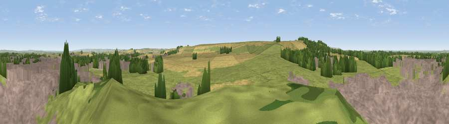

Viewpoint near Chilton
#18825 in England · top 24% of its area beats it · near ChiltonThe view, rendered

A 360° render of this exact spot computed from the terrain model, tree cover and land cover — summer colours, afternoon light, calibrated against photographs of famous viewpoints. Real trees, hedges and buildings will differ in detail.
The panorama
Grey silhouette: terrain skyline in each direction (720 bearings, Earth curvature and refraction included). Dashed green: skyline with trees (+15 m) and buildings (+8 m) as obstacles. Blue strip: how far the ground is visible on each bearing.
Where the view opens
Wedge length = distance to the farthest visible ground on that bearing (vegetation-aware). Rings at 10, 25 and 50 km.
What fills the view
38% built-up · 36% grassland · 20% cropland · 6% woodland
Angular shares of the visible panorama (visual magnitude), not map area. Landscape diversity 0.54 (0–1 Shannon).
Key numbers
More beautiful places nearby
The staircase of upgrades: each row has a higher view potential than everything closer. Driving times are estimates from straight-line distance, calibrated against real road routing — check an actual route before setting out.
| Place | Direction | Drive | Score |
|---|---|---|---|
| Sheep Down | SSW · 2 km | ~4 min | 55.9 |
| Viewpoint near Blewbury | ESE · 5 km | ~11 min | 60.8 |
| Viewpoint near Compton | ESE · 8 km | ~15 min | 64.1 |
| Round Hill | NE · 12 km | ~22 min | 70.1 |
| Viewpoint near Woolstone | W · 17 km | ~29 min | 70.9 |
| Viewpoint near Woolstone | W · 17 km | ~30 min | 76.7 |
| Martinsell viewpoint | SW · 37 km | ~55 min | 77.3 |
| Viewpoint near Leckhampton | WNW · 62 km | ~84 min | 77.8 |
51.56977, -1.31858 · source: screening · position refined by local search. Computed location — check access rights before visiting.